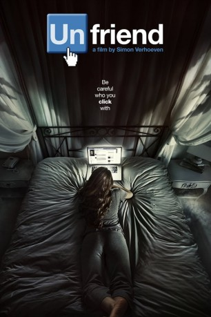

#9362 Unfriend
 
 IMDB-Wertung: 5.3 / 10
IMDB-Wertung: 5.3 / 10  Metascore: 0
Metascore: 0 
Studentin Laura genießt das College-Leben in vollen Zügen und ist bei ihren Kommilitonen sehr beliebt, was sich nicht zuletzt an ihren 800 Freundschaften auf Facebook ablesen lässt. Täglich tummelt sich Laura in den Sozialen Medien, hat online Kontakt mit Freunden und Bekannten und denkt sich nichts dabei, wenn sie Details und Fotos aus ihrem Leben auf Facebook postet. Deswegen ist Laura auch nicht verwundert, als sie die Freundschaftsanfrage der Außenseiterin Marina erhält, die sie eigentlich kaum kennt. Als sie sie annimmt, gerät die junge Frau jedoch in den Bann eines grausigen Fluchs: Lauras Freunde sterben einer nach dem anderen und ihr bleiben nur wenige Tage Zeit, das Rätsel um die mysteriöse Marina und ihr Facebook-Profil zu lösen.
Jahr: 2016
Dauer: 92 Minuten
FSK: 16
Land: Deutschland Studio: Warner Bros.Tonspuren:
Untertitel: Deutsch,
Auflösung: 1080p (1920x816) Größe: 6696 MB
Genre: Thriller, Horror
Regisseur: Simon Verhoeven
Drehbuch: Matthew Ballen
Soundtrack: Gary Go, Martin Todsharow
Darsteller:
- Alycia Debnam-Carey als Laura
 William Moseley als Tyler
William Moseley als Tyler Connor Paolo als Kobe
Connor Paolo als Kobe- Brit Morgan als Olivia
- Brooke Markham als Isabel
- Sean Marquette als Gustavo
- Liesl Ahlers als Marina
 Shashawnee Hall als Det. Cameron
Shashawnee Hall als Det. Cameron- Lee Raviv als Marina (child)
 Nicholas Pauling als Second Officer Dempsey
Nicholas Pauling als Second Officer Dempsey- Jay Anstey als Girl 1
- Bill Russell als Cab Driver
 Leon Clingman als Doctor
Leon Clingman als Doctor- Roxanne Kalie als Girl 3
- Susan Danford als Caroline
- David Butler als Dr. Markham
- Julian Katz als Bully 1
- Kiano Janse van Rensburg als Bully 2
- Dorothy Ann Gould als Elizabeth Palmer
- Kimberleigh Stark als Dean Richards
- Wendy Acton Burnell als Tattooed Girl
- Julie Summers als Mother Isabel
- Nevena Jablanovic als Jogging Girl (Katie)
- Matthew Ballen als Tired Clerk
- Carolyn Forward als Girl 2
- Owen De Jager als Janitor
- Deirdre Wolhuter als Ada Nedifar
- Lauren Steyn als Teacher
- Chloe Hirschman als Core Group Girl 2
- Michelle Nothnagel als Core Group Girl 3
Datei: X:\2016(N-Z)\Unfriend (2016, FSK16, 1920x816).mkv seit 15.08.2018
Festplatte: HD 2016(A-Z)
 Es gibt insgesamt 182 Filme in der Gruppe '2016(N-Z)'
Es gibt insgesamt 182 Filme in der Gruppe '2016(N-Z)'